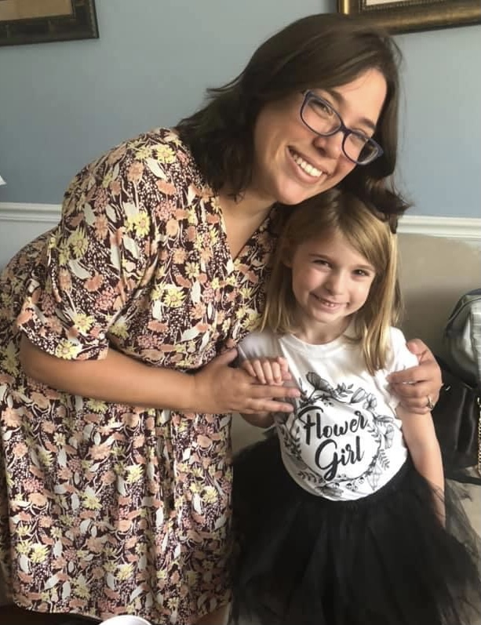

Introduction
My six year old daughter, Norah, was diagnosed with celiac disease in the fall of 2020 when she was in kindergarten. After years of me raising concerns about her health that were either brushed off or ignored by doctors and others in my life, Norah became extremely anemic and stopped growing. Norah’s doctor thought it was unusual that her anemia was so severe, so she decided to do some extra tests. When the doctor called to say that some of her blood work implied that she may have celiac disease, I didn’t know what to say or think. I knew nothing about it other than knowing that I have both of the genetic variants for it according to my 23andMe report. Lots of blood work and an endoscopy later, Norah received her official diagnosis, and we were told she needs to be on a strict gluten free diet for life with no exceptions.
Being the parent of a child with a severe (yet thankfully treatable) autoimmune disease can be very challenging. The stress, especially initially, is intense. Many people don’t understand the severity of the condition and the vigilance required to keep a child with celiac safe from contact with gluten. I can promise you though that it does get easier.
What is celiac disease?
Celiac disease is a severe autoimmune disease. People who have certain genetic variants are at risk of developing celiac. When a person with celiac disease ingests gluten, it causes their small intestine to have an immune response that makes it attack itself. This causes the villi in the small intestine to flatten, which in turn keeps the person with celiac from absorbing nutrients. This can lead to many complications, including digestive issues, malnutrition, anemia, stunted growth, lactose intolerance, neurological issues, and the list goes on. There are literally hundreds of symptoms associated with celiac disease. Individuals with celiac disease who ingest gluten are at much greater risk of many types of GI cancers and other autoimmune diseases.
What is gluten?
Gluten is a protein that is found in wheat, barley, and rye. You can find gluten in many types of food, such as bread, cereal, crackers, granola bars, soy sauce, pasta, pancakes, croutons, gravies and sauces, etc. Gluten can also be found in unexpected places, such as hand sanitizers, shampoos, soaps, lotions, craft supplies, paper straws, etc.
Avoiding gluten
People with celiac disease cannot ingest even minute amounts of gluten. Avoiding foods that are cross contaminated with gluten is one of the most challenging parts of parenting a child with celiac, because it is easy to contaminate a person with celiac’s food. Things that can trigger a reaction are gluten free foods that were packaged on lines after foods with gluten, foods that were grown near wheat (e.g. oats- they must be certified GF to be safe), restaurant employees not changing gloves before handling food, flour in the air at a bakery, etc. Just a crumb or two can cause a severe reaction.
American food labeled practices also make avoiding gluten challenging. For a food to be labeled as “gluten free”, it needs to have < 20 ppm (parts per million) of gluten. Unfortunately, 20 ppm isn’t necessarily safe for people with celiac depending on their food intake for the day, and it can still cause a reaction.
People can get glutened from things you wouldn’t expect. I know someone who got “glutened” from some crumbs that touched their fork in a silverware drawer. A friend with celiac was glutened when some of her shampoo accidentally got in her mouth when she was washing her hair. One exposure can make a person with celiac sick for hours, days, or even for over a week. Some of the symptoms may include severe bloating/stomach distension, GI issues, fatigue, brain fog, stomach pain, vomiting, etc.
Kid specific struggles
Norah has adjusted well to being gluten free. She knows she has celiac disease and has to eat gluten free, and she has learned to ask if food items are gluten free before eating them (unless the food comes from us). She can read and knows how to check food labels for wheat and the “gluten free” symbol. Unfortunately, despite knowing that there are lots of delicious foods she can still have, she is still a kid and wants to eat like her friends. It’s hard for a child to go to a birthday party and not be able to join in on pizza, cake, and ice cream. She can’t eat out at most restaurants due to the risk of cross contamination (depending on the establishment). She can’t eat school lunch, share snacks with friends (unless it’s GF), and she has to be extremely careful about hand washing to ensure she doesn’t touch a surface with gluten before eating. Due to cross contamination concerns, kids with celiac usually have to bring their own food to friends’ houses unless their parents also follow strict GF protocols or have GF pre-packaged snacks (to avoid cross contamination).
Gluten-free favorites in STL
Thankfully, there are tons of foods that are delicious and safe for people with celiac disease. While it is best financially to make gluten free foods yourself since the price of GF food is astronomical, sometimes it’s good to buy pre-made, certified GF things for convenience. Some of our favorite GF brands are Glutino brand foods (just about everything they make is amazing) and Schar. We have found some other amazing substitutes for gluten contained foods like Goodie Girl cookies, Vans waffles, Freschetta’s GF pizza, Live G Free Mac & Cheese, Canyon Bakehouse Bread, etc. There is also an incredible and exclusively gluten free bakery in Kirkwood, MO (about 30 minutes from our house) called Britt’s Bakery.
My tips for navigating a gluten free life for your child
My first suggestion is to completely eliminate gluten from your household. We were told to throw away cutting boards and wooden utensils as they tend to absorb gluten. Any pots or pans with scratches, stoneware, and plastic utensils (ladles, large spoons, etc.) should all be replaced. It is also important to throw away your toaster-- there is no way to clean out every crumb. The same goes for air fryers.
When you are first starting out navigating gluten free foods for your child, my advice is to google everything! I always search “ *food* + celiac” to see if it is safe for those with celiac. Learn how to read labels and find “hidden” sources of gluten. You can download the GF Scanner app to support you while you are learning- it scans barcodes to see if the product contains gluten. There is also a great app called Find Me GF. If you pay a little extra, you can get the celiac filter. You can search for restaurants in any area, and there will be reviews from people with celiac showing if the establishment is safe or not. Users leave reviews on safety protocols. We have found numerous restaurants with dedicated GF fryers and safety protocols using the app so our daughter could eat out somewhere safe.
Finding a support system has been so helpful! I am thankful to now know some people with celiac disease who can relate to Norah’s struggles and give advice on food. There are lots of helpful websites and groups you can join on social media as well. I am in several celiac groups on Facebook, including one for parents of children with celiac, and having those groups have been a lifesaver. I highly recommend seeking out others who are going through the same thing and have their own experiences and advice on how to support children with celiac.
You’ve got this
Learning that your child has an incurable, chronic autoimmune disease is a very difficult thing to process. However, celiac is very treatable, and if they follow a strict gluten free diet, your child will grow again and be healthy and happy. It took our family several months to get used to the new normal. You will get to the point where you feel comfortable and confident keeping your child safe from gluten-- hang in there!